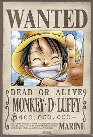

Home
Luffy Gallery

The captain of the Straw Hat Pirates!
Made of rubber.
Favorite food is meat.
Also known as Straw Hat Luffy
Determined to become the King of Pirates
most the popular anime for over a decade!